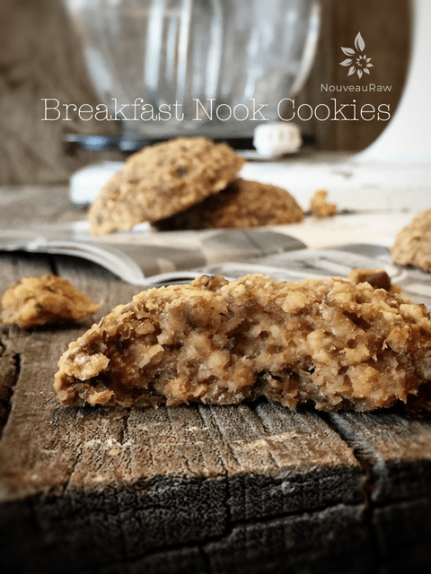
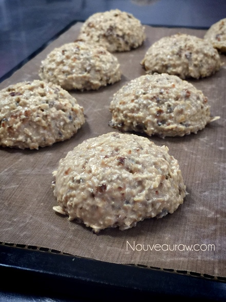
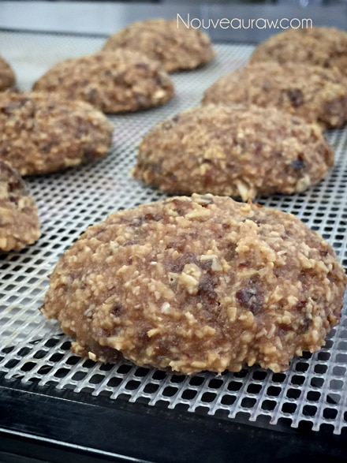
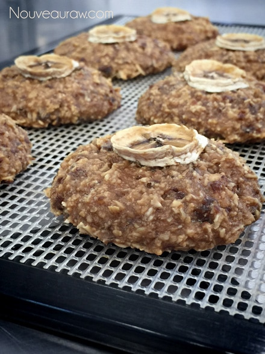
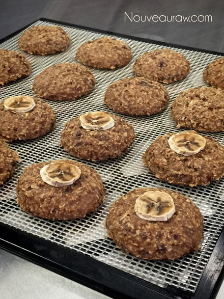
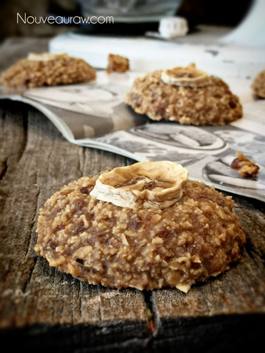
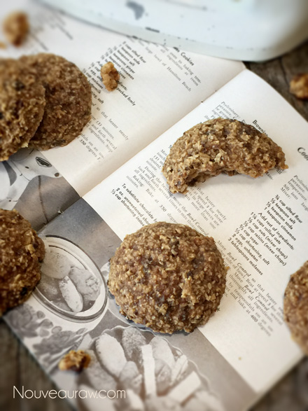
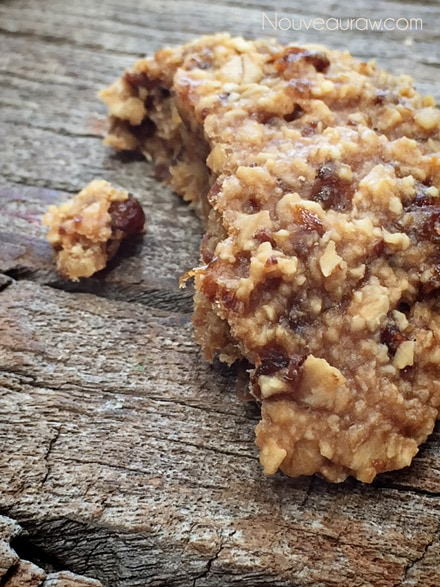

Breakfast Nook Cookies

~ raw, gluten-free, vegan ~
Today I played around with a raw sweetener called Yacon syrup. For those looking for a vegan sweetener that is raw, this might be a wonderful alternative to stock in the pantry.
It has a very nice caramel taste and is about half as sweet as honey or maple syrup. To me, raw yacon syrup is the perfect substitute for molasses. It certainly has the same thick and stringy viscosity.
Sweeteners are always a topic of controversy. Honey, which can be purchased “raw,” is not vegan, and maple syrup, though vegan, is not raw. I could go on and on, but you get the point.
I am not here to debate which sweetener is better than the other or whether or not you should consume them. You know your own health better than anyone else, so you will need to make those determinations for yourself.
Mixing “Sugars”
I like to mix different sweeteners together for several reasons. By layering multiple sweeteners, I can sometimes reduce the overall glycemic load, as well as create layers of flavor and sweetness.
For this recipe, I leaned heavily on the bananas to add a whole food sweetness to the cookie. The key is to use ripe bananas. Not only are they easier to digest, but ripe bananas are also higher in sugars. The raisins were also added to add a little sweetness but more for their chewy texture. To keep the sugar levels down, you can add stevia, which bumps up the sweet level without adding more sugars or calories. In raw recipes, you always need to take your health needs into account, the texture that you want from a recipe, and the overall flavor.
Yields 15 (1/4 cup) cookies
- 2 cups gluten-free, rolled oats, soaked & dehydrated
- 3 medium ripe bananas
- 1 cup raisins
- 1/2 cups natural almond or peanut butter
- 1 Tbsp yacon syrup
- 1/2 tsp Himalayan pink salt
Preparation:
- Let’s make this as easy as it can be….throw all ingredients into the food processor and mix well.
- Using a 1/4 cup measuring scoop, drop the cookie dough onto the teflex dehydrator trays and flatten with the back of a spoon or keep them mounded.
- Optional – I pressed a dehydrated banana chip into the center of some just for fun.
- Dehydrate at 145 degrees for 1 hour then reduce to 115 degrees for roughly 8 hours.
- The dry time depends on how much moisture you want to be left in the cookie.
- The climate you live in also will affect the dry time; humidity can really slow down the process.
- Once the cookies are done and cooled, place them in an airtight container and store them in a single layer. As far as texture goes, these cookies are firm on the outside and chewy on the inside.
- In the fridge, they should keep for 2-3 weeks. In the freezer, up to 3 months.
The Institute of Culinary Ingredients™
- To learn more about Yacon syrup by clicking (here).
- What is Himalayan pink salt and does it really matter? Click (here) to read more about it.
- Learn how to make your own raw almond butter by clicking (here).
- Are oats gluten-free? Yes, read more about that (here).
- Are oats raw? Yes, they can be found. Click (here) to learn more.
- Do I need to soak and dehydrate oats? Not required but recommended. Click (here) to see why.
Culinary Explanations:
- Why do I start the dehydrator at 145 degrees (F)? Click (here) to learn the reason behind this.
- When working with fresh ingredients, it is important to taste test as you build a recipe. Learn why (here).
- Don’t own a dehydrator? Learn how to use your oven (here). I do however truly believe that it is a worthwhile investment. Click (here) to learn what I use.
Ready for the dehydrator. Because they are “wet” and sticky,
I started them off with a non-stick sheet.

About 4 hours later, I transferred them to the mesh sheet to
help speed up the dry time.

As you can see, they are darkening a bit while they dry. Gives
them that “cooked” appearance.

I made some with and without banana chips on top.



One last bite…

© AmieSue.com